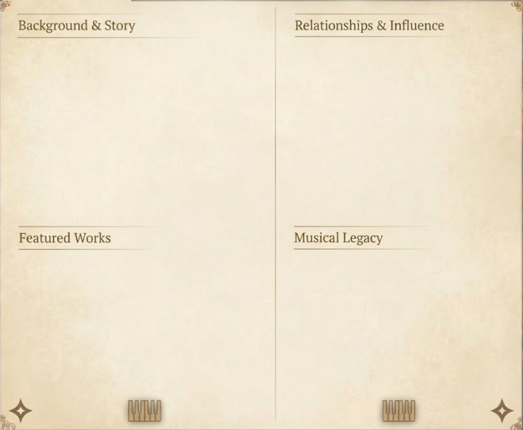
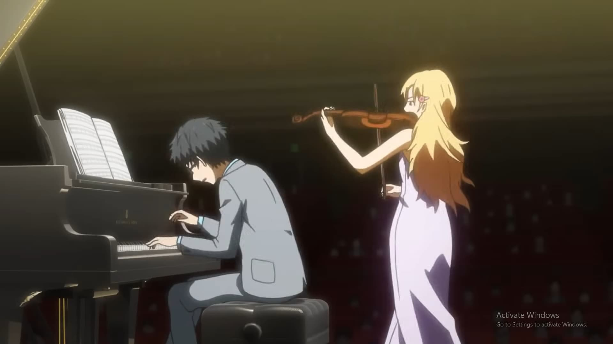
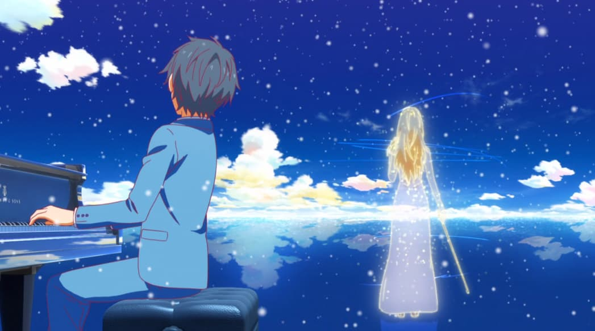

Kousei was once a child prodigy known as the "Human Metronome" for his mechanical, flawless adherence to musical scores—a result of his mother’s strict, often abusive, training. Following her death, Kousei suffered a mental breakdown that left him unable to hear the sound of his own piano. For two years, he lived in a world of gray until a chance encounter with a violinist under the cherry blossoms forced him to confront his trauma and rediscover the "colors" of music.


- Etude Op. 25, No. 5 (Chopin): The piece where he stopped playing for the judges and started playing for Kaori, even as the sound "disappeared" for him.
- Kreutzer Sonata (Beethoven): His first major "clash" of styles with Kaori, marking the moment he began to change.
- Ballade No. 1 in G Minor (Chopin): His final performance in the series—a heartbreaking, ethereal duet with the memory of Kaori.



Kaori Miyazono: The violinist who shattered his shell. She was the "tempest" that forced him back onto the stage, teaching him that music is freedom and that he wasn't meant to be a machine, but an artist. She is the reason he can see "color" again.

Tsubaki Sawabe & Ryota Watari: His lifelong anchors. Tsubaki stayed by his side through his darkest years of silence as his emotional protector, while Watari provided the grounded, sincere friendship Kousei needed to stop being a bystander in his own life.
Influence: He transitioned from the "Human Metronome"—a pianist of mechanical perfection—to an artist who plays with "sorrow and beauty." He learned that music is a dialogue, proving that even a broken heart can produce a melody that reaches the stars.
Kousei’s legacy shifted from "perfection" to "sincerity." By the end of his journey, he learned that a musician’s role isn't to be a perfect recording, but to share their inner landscape with the audience. He became a pianist who plays with "sorrow and beauty," proving that even the most broken heart can produce the most resonant melodies. He remains a symbol of resilience—the boy who finally learned to hear the music again.